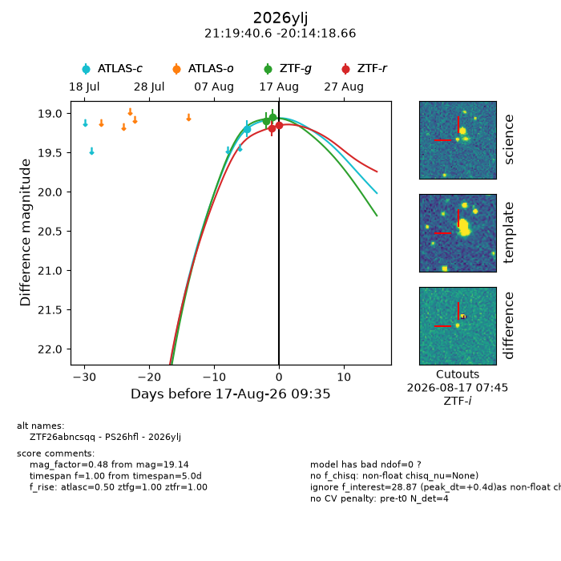
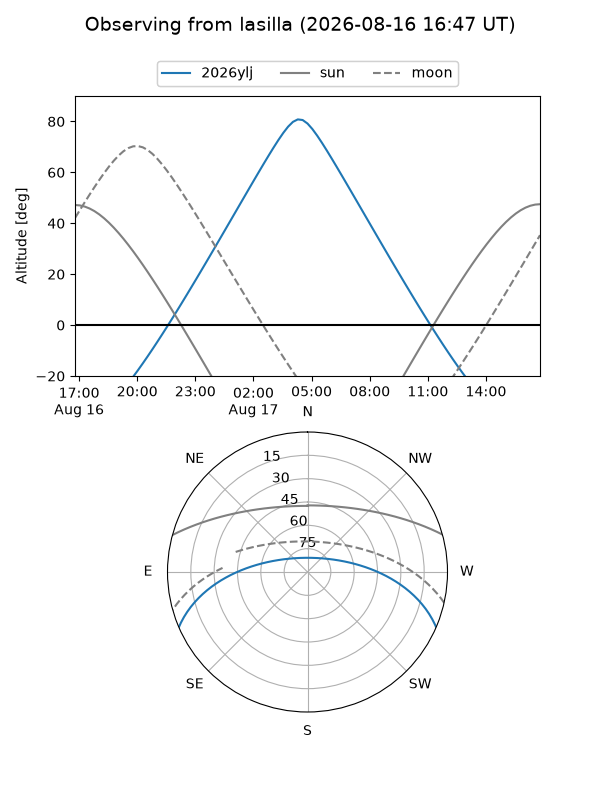
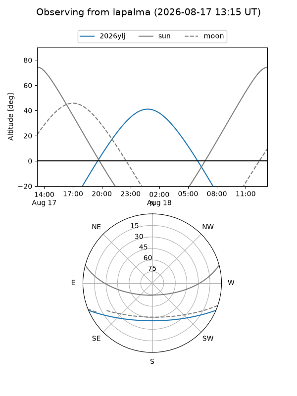
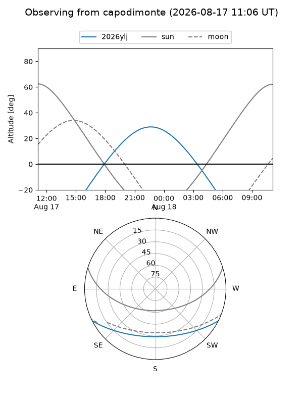
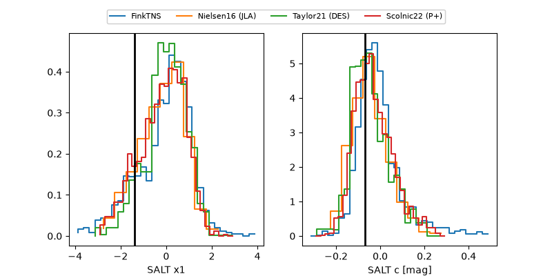

2026ylj
Target 2026ylj at 2026-08-17 09:39
Aliases and brokers:
FINK-ZTF: ztf.fink-portal.org/ZTF26abncsqq
Lasair-ZTF: lasair-ztf.lsst.ac.uk/objects/ZTF26abncsqq
ALeRCE-ZTF: alerce.online/object/ZTF26abncsqq
YSE-PZ: ziggy.ucolick.org/yse/transient_detail/2026ylj
TNS name: wis-tns.org/object/2026ylj
Direct TNS query: direct search
alt names
ZTF26abncsqq (ztf,fink_ztf)
2026ylj (tns,yse)
PS26hfl (panstarrs)
Coordinates:
equatorial (ra, dec) = 319.9191,-20.23852
equatorial (HMS+DMS) = 21:19:40.59,-20:14:18.66
galactic (l, b) = (29.1083,-41.37407)
Flags:
TNS type: nan
peak dt: +0.4
Photometry:
last atlasc=19.20, ztfg=19.04, ztfr=19.14
1 atlasc, 2 ztfg, 2 ztfr detections
Lightcurve

Visibility



Additional plots
